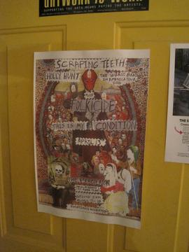

Rock 'n Rollers Don't Bathe
picture:

This Is My Condition, Folkicide, Holly Hunt & Scraping Teeth at the Percolator Art Space in Lawrence, KS (4-13-12)
I lived in Lawrence, Kansas for 5 years from 1988 to 1993. I saw a lot of good live music in that 5 years. At various times I saw: Nirvana, The Pixies and Urge Overkill at the KU Student Union...Fugazi, Jesus Lizard, and Helmet at the Outhouse....I saw: Sonic Youth, Henry Rollins, and Tool at Liberty Hall. I saw The Butthole Surfers, SWANS and even Bo Diddly at the Bottleneck. I saw countless other great shows at house parties and pop-up venues that have come and gone. I don't remember the last show I saw in Lawrence, Kansas but it was probably during this time. I could never have predicted that it would be nearly 19 years before I saw another show in Lawrence, Kansas. I could never have predicted that I'd be driving a rented Chevy Sonic with my girlfriend of 13 years to the next show I would see in Lawrence, Kansas. I could never have predicted that the next show I would see in Lawrence, Kansas would include 2 old friends from back in the day, sharing a bill with a band that was voted 1998's "Worst band in America" by SPIN magazine, in a back alley Art Space. I could never had predicted that I would be enjoying a delicious bowl of Tunisian Chickpea Breakfast Soup and sipping a local Kansas City Boulevard Pilsner beer as I watched said bands. I never could have predicted any of this but I sure did have a great time.

The Percolator is a small independently run Artist Space located in little rectangular building, off Rhode Island St., just behind the Lawrence Arts Center. The present exhibit there is a somewhat controversial show entitled The Story of Chickens: A Revolution.

The show is curated by Amber Hansen and includes a number of mixed medium pieces, photos, paintings, sculpture and even poetry dealing with our relationships with chickens.

Out front was a portable chicken coup. The coup was placed at various points about town and photographed.

The tongue and cheek quality of the entire exhibit made for a fresh take on the potentially heavy handed subject matter of corporate farming, vegetarianism, and our relationships to animals.

It was a nice evening, luckily the forecasted rain was holding off. A makeshift performance space was created in a gravel area in front of the gallery.

My old friend Craig Comstock organized the evening. He was also kicking the night off as the first musical performance. I first met Craig on a High School choir field trip. We talked to each other because we both had weird hair. He has a little less hair now but his one man band, This Is My Condition, is a sonic force to be reckoned with. TIMC is 2 parts Pussy Galore and 1 part Nirvana. Comstock uses his guitar more like a percussion instrument, layed flat between his snare and floor tom, he bangs on the strings with drumsticks in between thunderous Dave Grohl-esque beats. Fat detuned slide riffs behind a bed of distorted lyrics and occasional feedback are the cherry on top of this sweet indie-noise sundae. The general sound is somewhat reminiscent of an old favorite of mine Doo Rag.
I've known Burnie Booth, the songwriting force behind Folkicide, since back in the days of his legendary Lawrence band Big Toe.

I have to come clean and admit that, at the time, I was not the biggest Big Toe fan. I am happy to report that I have done a bit of growing since those days and learned to appreciate a few bands outside of Fugazi and The Jesus Lizard. Luckily, this is timed well with my first live Folkicide show. If the Ramones and Buddy Holly had unprotected sex on Willam S. Burrough's grave it would probably sound something like Folkicide. The apocalyptic poetry and chugging dissonant acoustic guitar would fit right into the late 90's NYC Antifolk scene. But when Booth delivers lines like: "I worship the Devil, 'cause I know he's on the level" in that nasal Mid-western twang it's clear that he's a true child of Bob Dole country. Backed up by some nice rolling and cymbal-less drumming by a sweet chap named Zach, Folkicide lived up to their name with equal parts sweet and dark. One to watch for sure.
After a short break the out of town portion of the evening began with Miami based band Holly Hunt. Think Godflesh with live drums and no vocals and you've pretty much got it.

Extended sludge rock drones at earsplitting levels...not the most original concept but pretty cool to watch with mother nature providing a natural light show in the form of occasional distant lightning strikes in the background. The drummer's ear-to-ear grin throughout the entire set also provided a much appreciated injection of levity.

The final act of the night was Scraping Teeth, also from Miami. Scraping included the drummer and bass player from Holly Hunt joined by another 2 guitar players, one of which I would learn was the only original member of Scraping Teeth (Rat) since their 1998 knighting as SPIN Magazine's "Worst Band In America."

With very little warning the band erupted into a wall of about 20 to 25 solid minutes of uninterrupted guitar noise-wank backed by some steady, and highly proficient I might add, drumming. The amps were turned to 11 and the obligatory strobe light was flipped on. I secured my already inserted ear plugs, helped myself to some of the free coffee, and settled in. Throughout the set one of the guitar players would shout something into the single microphone but the racket was so loud it was a stretch to decipher any variation in the overall soundscape. It was quite a racket but when the dust settled, sadly, I have to admit that I've seen worse. Very sweet people though, and I was thoroughly impressed by the the sheer athleticism of what they had accomplished.

The night ended early, for a weekend, but there was a buzz about those who had stuck it out that something special had happened here. Our ears and bellies had been filled. Curious night strollers passed by and smirked. Despite the outside location and ear splitting volumes the Lawrence Police only made one appearance the entire night to ask someone to move a car that was blocking the alley. My mind quivered at the thought of how rapid the NYPD would have descended upon an outdoor concert like this, let alone the nightmare permit process one would have had to go through to even attempt such a thing legally. You've still got it Lawrence. Good show!
- MMM's blog
- Login or register to post comments